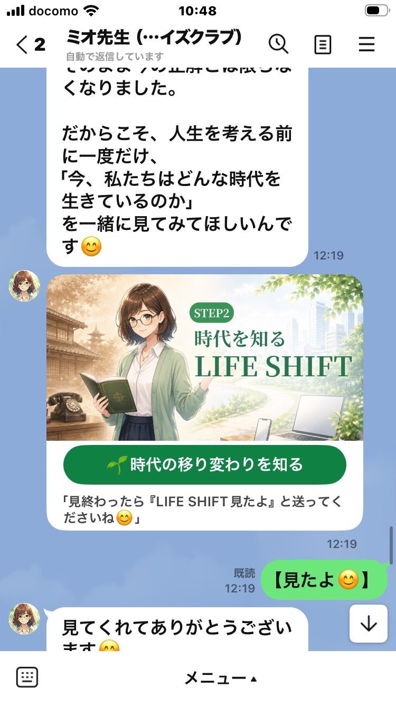
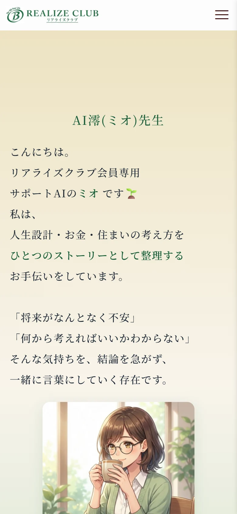
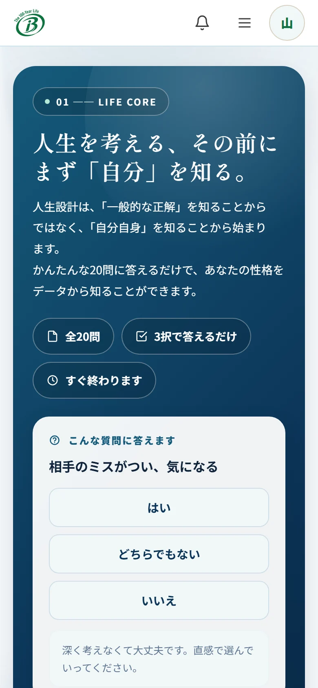
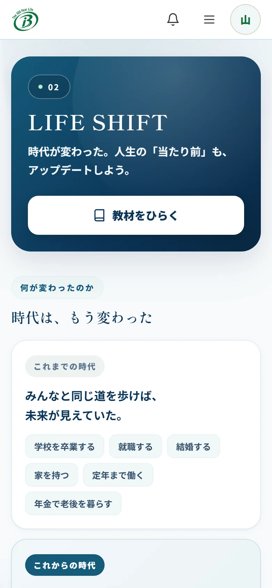
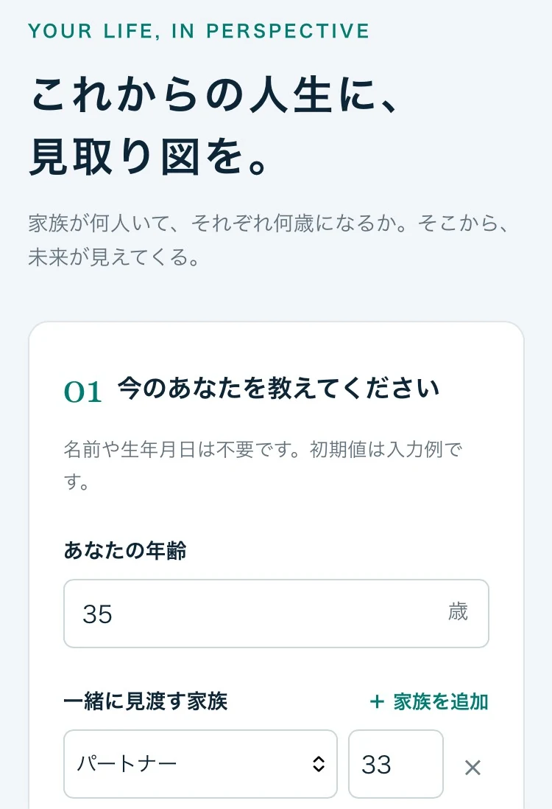
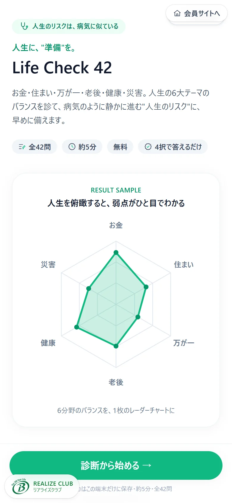
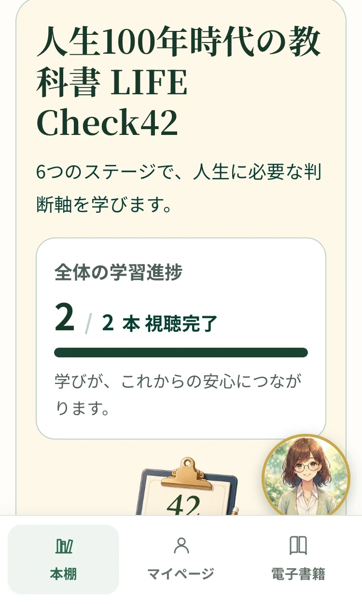
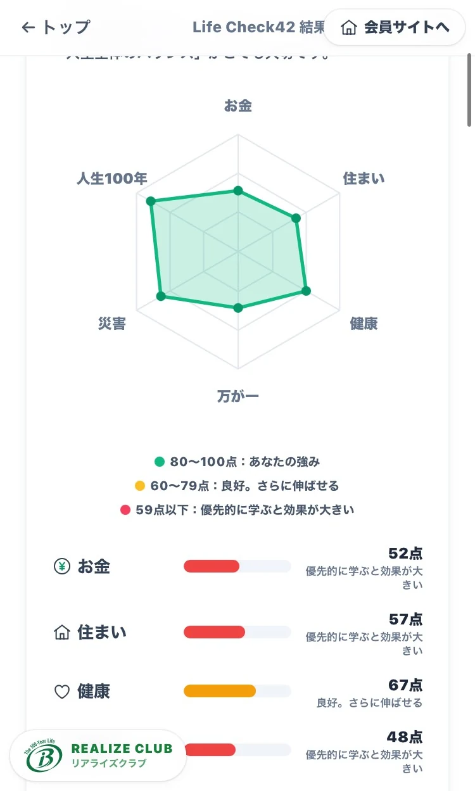
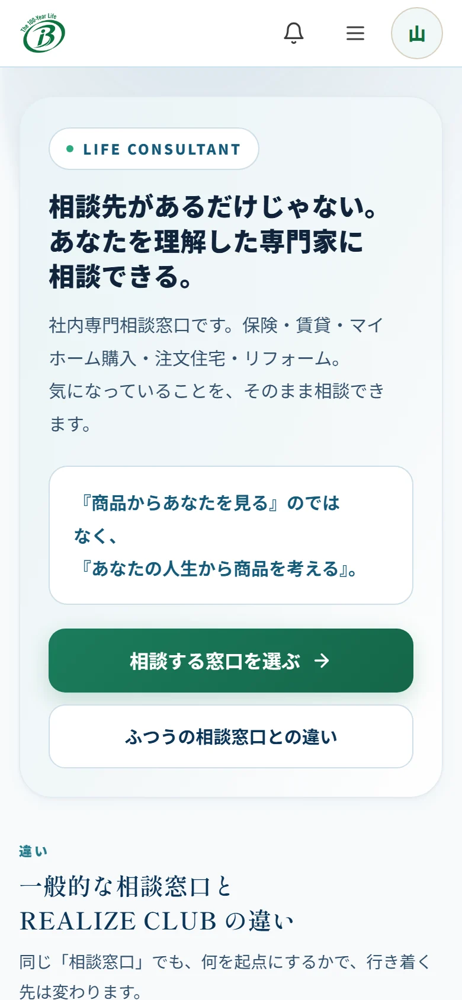

DAY 1
社員が 体験する、
人生の 旅。
REALIZE CLUB Contents
-
01
LIFE JOURNEY
LINEで、 いつでも伴走 人生について 考える時間を、 日常の 中に つくる。 LINEに 届く、 小さな問いかけ。 仕事、 家族、 お金、 住まい、 健康。 これからの 人生について、 少しずつ考えていきます。 
-
02
ミオ先生 会員専用の サポートAI 一人で 考えなくてもいい。 分からないこと、 不安なこと、 家族に 話しづらいこと。 ミオ先生が、 いつでも 話を聞きます。 
-
03
LIFE CORE
まず「自分」を 知る 人生設計は、 自分を 知ることから。 20問・3択の 診断で、 自分の 性格や、 大切にしていることを 知る。 それが、 人生設計の 起点になります。 
-
04
LIFE SHIFT
時代の 変化を 学ぶ 人生の 「当たり前」は、 もう変わった。 人生100年時代に、 何が 変わったのか。 9つの物語で 学び、 今の時代に合った 考え方に 切り替えていきます。 
-
05
LIFE EVENT Check
これから 起こることを 知る まだ起きていない 未来は、 準備することが できます。 結婚、 住宅、 教育、 介護、 老後。 人生イベントを 先に 知れば、 その時になって慌てずに、 今から 少しずつ備えられる。 
-
06
LIFE Check42
人生の 現在地を 知る 「なんとなく不安」を、 目に見える形に。 42問・約5分。 お金、 住まい、 健康、 災害、 万が一、 人生100年。 6つのテーマで、 今の 準備状況を 確認します。 
-
07
LIFE Academy
必要なことを学ぶ 学びが、 人生を 変えていく。 お金、 住まい、 万が一、 健康、 災害、 人生100年。 6つのステージの 動画と クイズで、 人生に 必要な知識を、 自分の ペースで。 
-
08
LIFE ROAD MAP
未来を 描く 学びの成果を、 人生設計書に。 学ぶ前と 後の 変化をもとに、 自分だけの 人生設計書を つくる。 今の 選択で、 未来が どう変わるかも 見えてきます。 
-
09
LIFE CONSULTANT
専門家に 相談する 必要なときは、 自分を 理解した 専門家へ。 保険、 住まい、 お金。 ミオ先生と 悩みを整理してから、 社内の 専門相談窓口へ。 いきなり 商品を すすめることは ありません。 まずは、 暮らしの話から。 